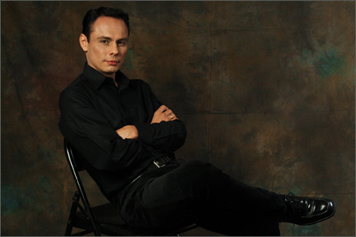

BAROQUE Baroque Music is a style of European Classical Music between 1600 to 1750. The baroque era followed the Renaissance period (approx. 1400 - 1600) and preceeded the Classical era (1750 - 1820). The baroque period is notable for the development of counterpoint, a period in which harmonic complexity grew alongside emphasis on contrast. In opera, intererst was transferred from recitative to aria, and in church music the contrasts of solo voices, chorus, and orchestra were developed to a high degree. In instrumental music the period saw the emergence of the sonata, the suite, and particularly the concerto grosso, as in the music of Corelli, Vivaldi, Handel, and Bach. Most baroque music uses continuo. Note that 18th century writers used 'baroque' in a pejorative sense to mean 'coarse' or 'old-fashioned in taste'. CLASSICAL In the most general meaning of the word, classical music may designate fine music or serious music. More technically the word may refer to a period in the history of music, the later 18th century, the age of Haydn, Mozart andBeethoven. The classical may be differentiated from the so-called romantic, the relatively experimental and less formally restricted kinds of music that became current in the 19th century. ROMANTIC Romanticism in cultural history is a word that defies precise definition. In music it is most commonly applied to a period or the predominant features of that period, from the early 19th century until the early 20th. Features of romanticism in music include an attention to feeling rather than to formal symmetry, expressed in a freer use of traditional forms, an expansion of the instrumental resources of music and an extension of harmonic language. 20TH CENTURY is defined by the sudden emergence of advanced technology for recording and distributing music as well as dramatic innovations in musical forms and styles. Because music was no longer limited to concerts, opera-houses, clubs, and domestic music-making, it became possible for music artists to quickly gain global recognition and influence. Twentieth-century music brought new freedom and wide experimentation with new musical styles and forms that challenged the accepted rules of music of earlier periods. Faster modes of transportation allowed musicians and fans to travel more widely to perform or listen. Amplification permitted giant concerts to be heard by those with the least expensive tickets, and the inexpensive reproduction and transmission or broadcast of music gave rich and poor alike nearly equal access to high quality music performances. JAZZ is a musical style that originated at the beginning of the 20th century in African American communities in the Southern United States. It was born out of a mix of African and European music traditions. From its early development until the present, jazz has incorporated music from 19th and 20th century American popular music. Its West African pedigree is evident in its use of blue notes, improvisation, polyrhythms, syncopation, call-response, and the swung note. FLAMENCO is a genre of music and dance which has its foundation in Andalusian music and dance and in whose evolution Andalusian Gypsies played an important part. The cante (singing), toque (guitar playing), dance and palmas (handclaps) are the principal facets of flamenco. In recent years flamenco has become popular all over the world and is taught in many countries - in Japan flamenco is so popular there are more academies there than in Spain. On November 16, 2010, UNESCO declared Flamenco one of the Masterpieces of the Oral and Intangible Heritage of Humanity. |
©2014 Copyright. Xavier Chavarro. All rights reserved. |